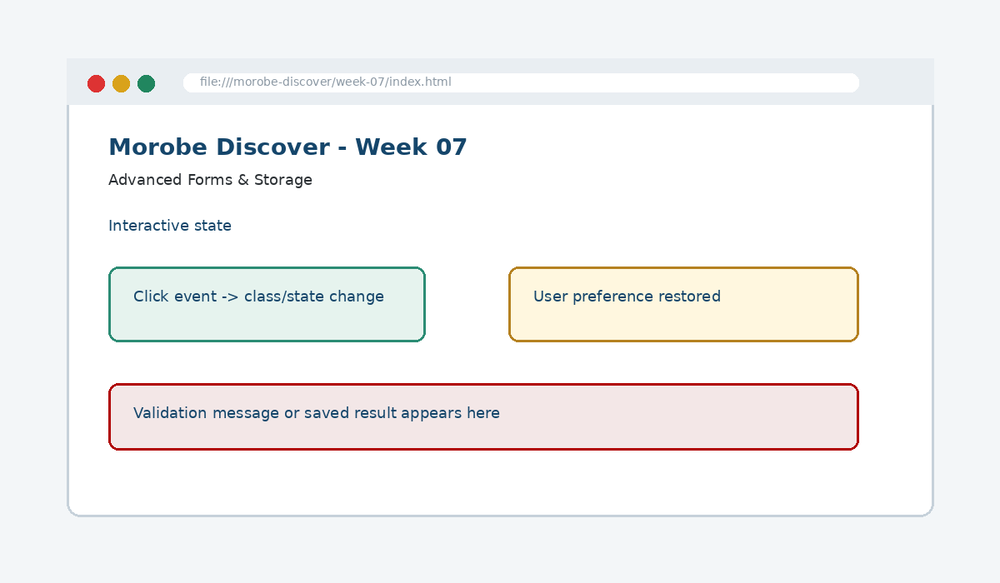

Advanced Forms & Storage
Implement client-side validation and persist lightweight user choices between browser sessions.

How this week's learning connects
1. Reading
Build the conceptual foundation and vocabulary for Advanced Forms & Storage.
2. Lecture
Inspect the core principle, code patterns and visible browser result.
3. Lab
Complete the guided build tasks with checkpoints, testing and Git evidence.
4. Morobe Discover
Integrate the result into the same project and preserve earlier features.
Client-side validation
Improves feedback but does not replace server-side validation.
localStorage
Stores string values across browser sessions.
Safe storage
Avoids private, secret or sensitive information in the browser.
Read the code line by line
if (days < 1) {
showError("Trip length must be at least one day.");
return;
}localStorage.setItem("theme", selectedTheme);
const savedTheme = localStorage.getItem("theme");What it does → Why it works → Where we use it
if (days < 1)
Checks the business rule before accepting the value.showError(...)
Calls a feedback function so the user knows what to correct.return
Stops the current function from continuing after an invalid value.localStorage.setItem
Stores a key/value pair in browser storage.localStorage.getItem
Reads the stored value later.
Project connection: This code belongs to the Week 07 Morobe Discover increment and should produce a visible or testable change related to Validation feedback plus persisted lightweight preferences.
Editable browser playground
Modify the example, run it, break it deliberately, and reset it. The preview is isolated from the course page.
Morobe Discover tasks
- Add custom validation messages
- Prevent submission when required logic fails
- Save theme choice or favourite destination IDs
- Recover saved values on page load
- Display clear feedback to users
Checkpoint tests
Morobe Discover — Week 07
This is the actual source project increment supplied for this week.
Check your understanding
Knowing the definition is not enough
A weak submission can define Advanced Forms & Storage but cannot point to the exact Morobe Discover file, code line and browser result. During code defence, be ready to connect code → visible behaviour → user reason → test evidence.
Prepare the next checkpoint
Week 08 loads destination and event content from JSON using the Fetch API.